A modular
refrigerator for
shared households.
A modular refrigerator and interface concept that organizes ownership, freshness and cleaning status for shared households.
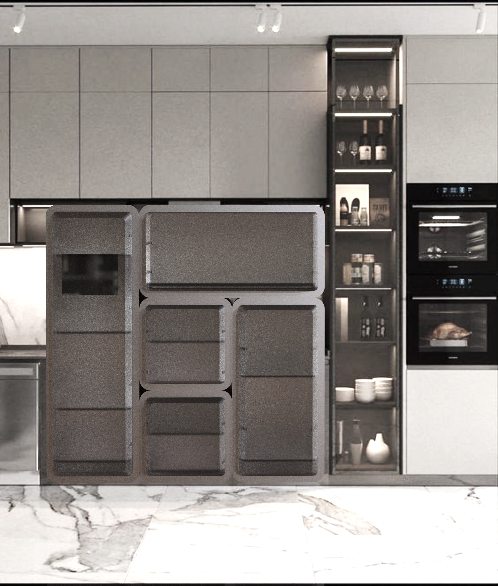
The project asked how a shared appliance could reveal who owns what, what needs attention and which cleaning tasks remain—before those issues become household friction.
Conventional refrigerator cleaning can take about 4.5 hours.
Mapping the conventional cleaning routine revealed a process that could extend to roughly four and a half hours, including defrosting, disassembly, washing, reassembly and airing.
Interview-informed research also surfaced uncertainty about freshness, unclear ownership and limited control for households with different routines.
01Invisible stateFreshness and cleaning status are difficult to judge quickly.
02Shared ownershipStorage boundaries are unclear when household routines differ.
03Complex maintenanceToo many parts and hidden corners make cleaning burdensome.
Modular storage paired with shared status information.
The concept separates storage into stackable volumes for different household needs, then connects those volumes through a shared interface.
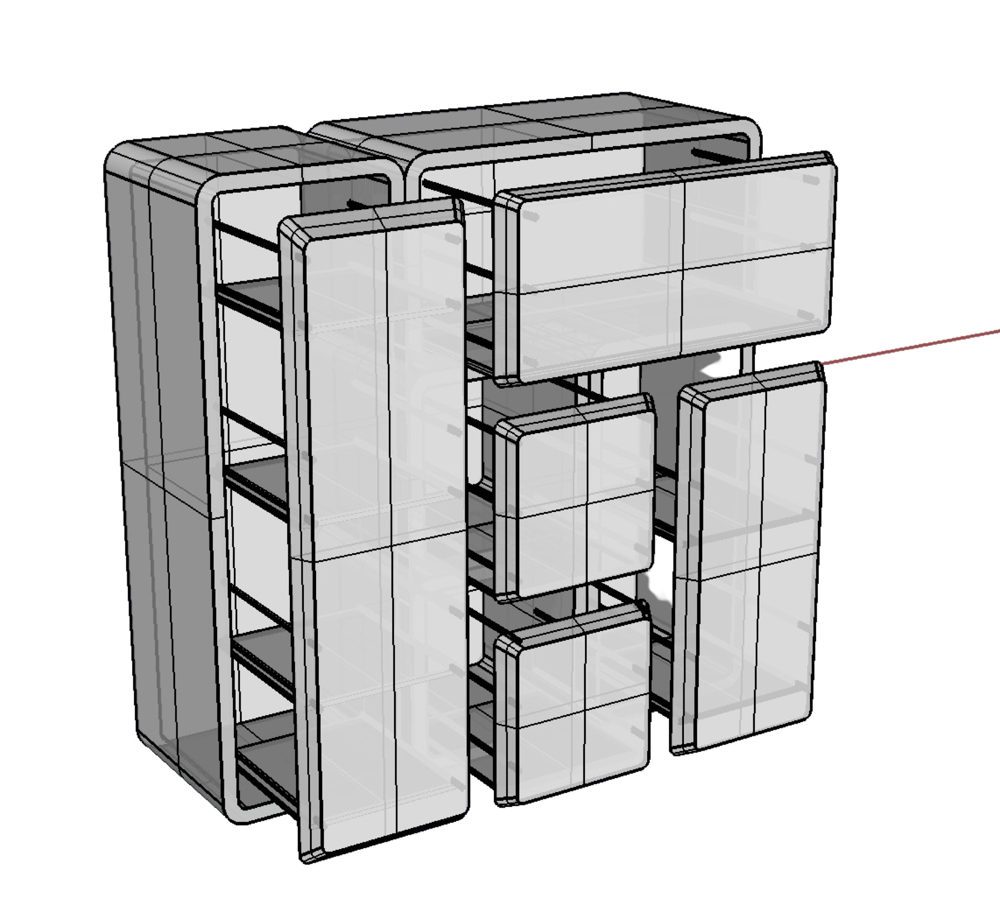
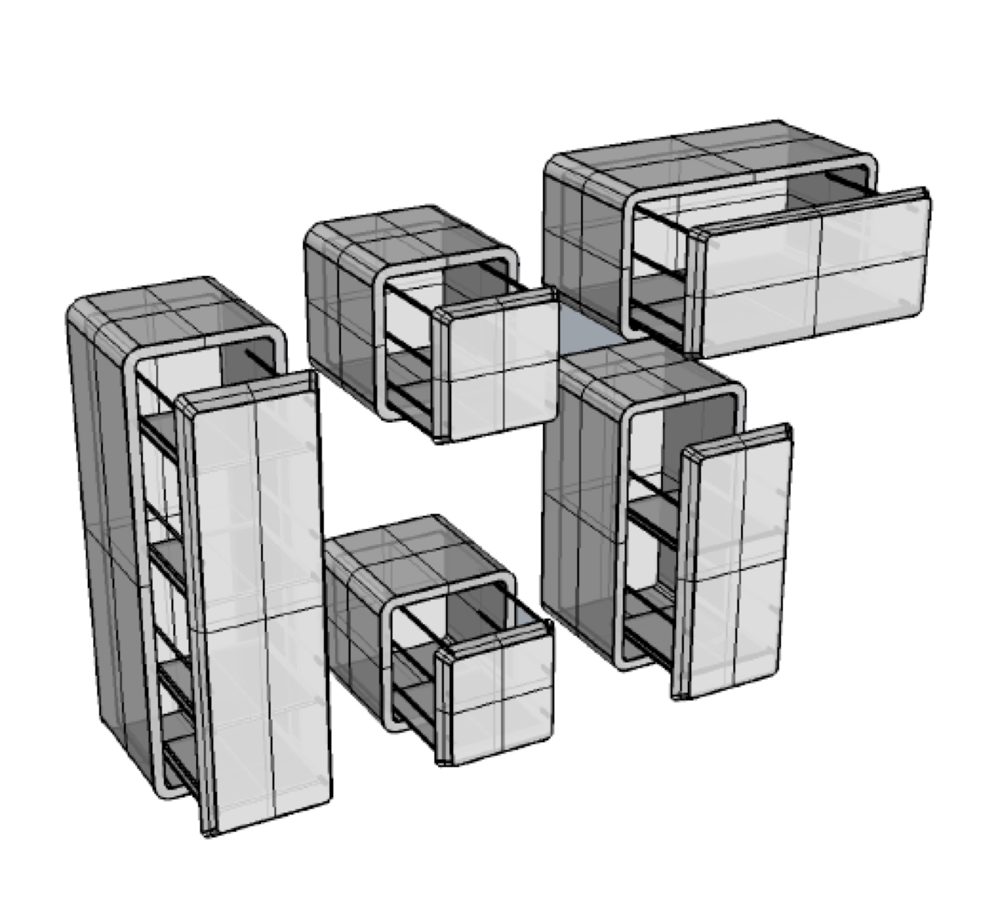
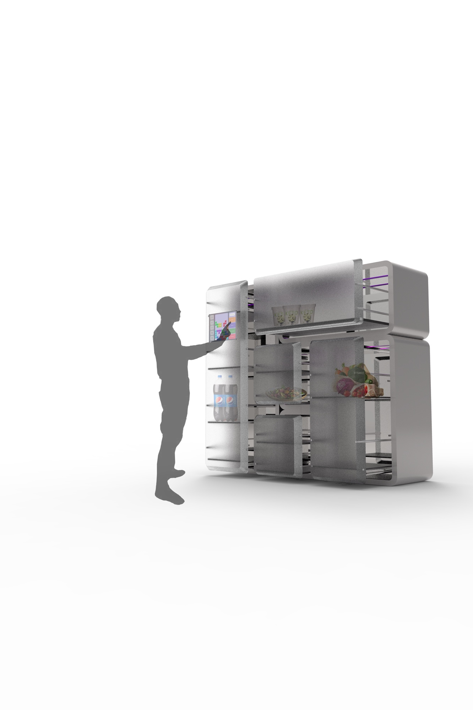
AModularConfigure storage around people and routines.
BVisibleBring freshness, progress and ownership into view.
CPlayableUse the Tetris metaphor to make maintenance easier to understand.
Six interface states use the same block-based logic.
The interface uses the same block logic across scanning, ingredient status, dietary overview, cleaning progress, suggestions and temperature control.
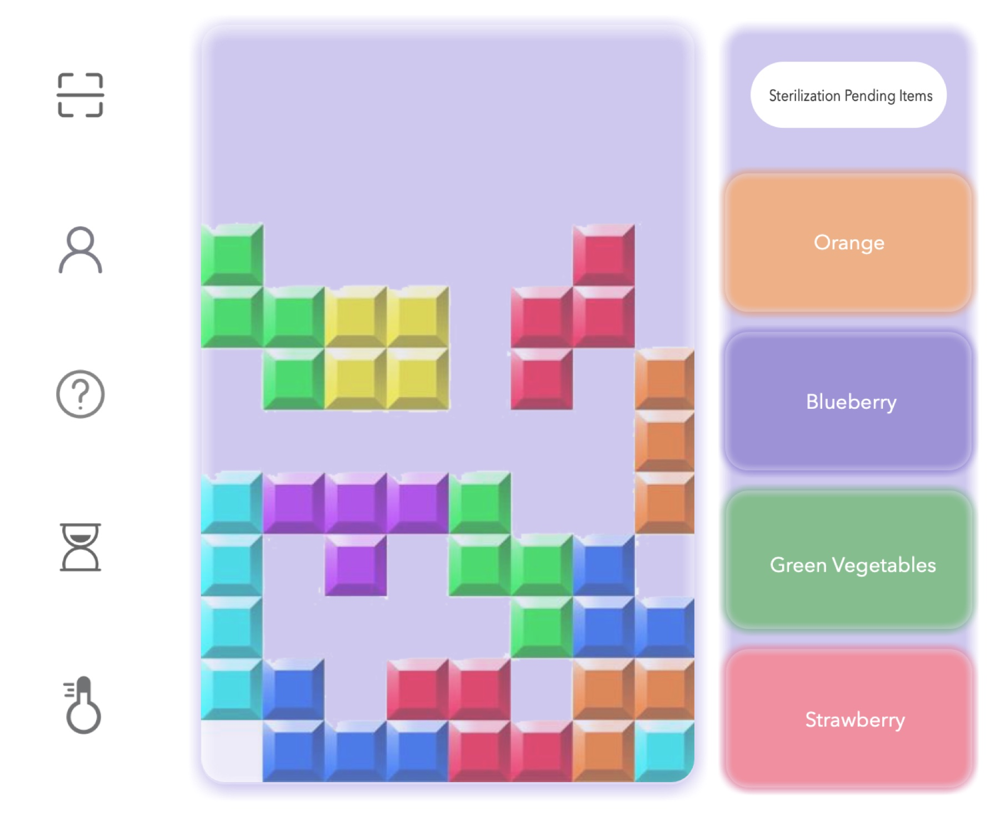
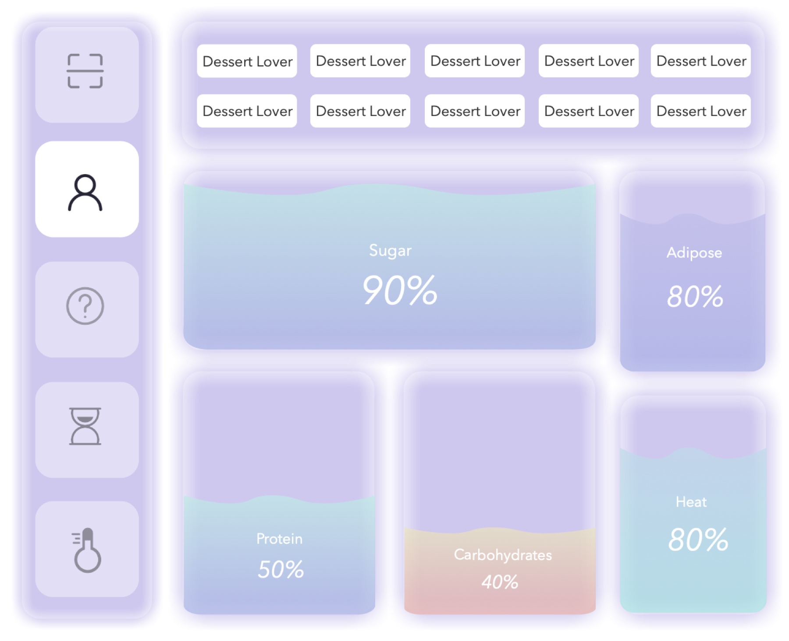
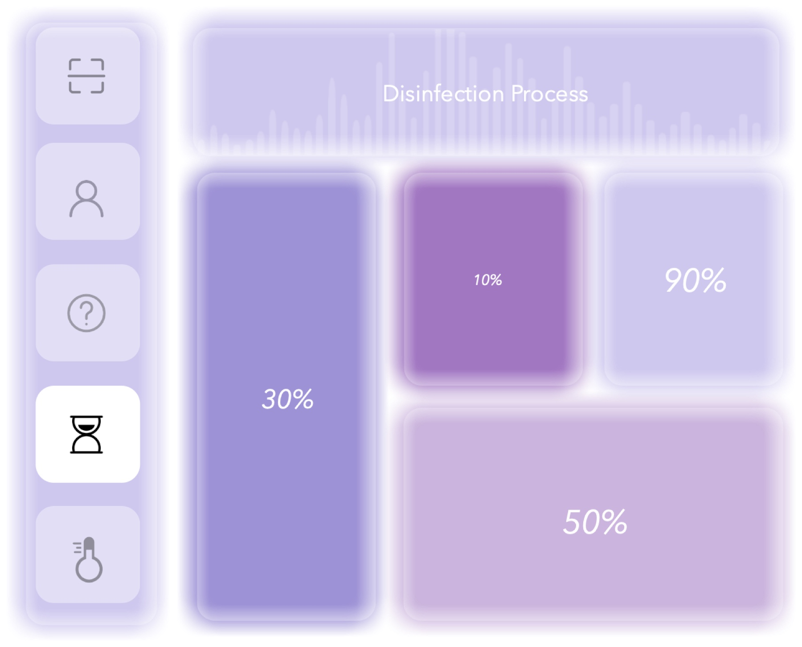
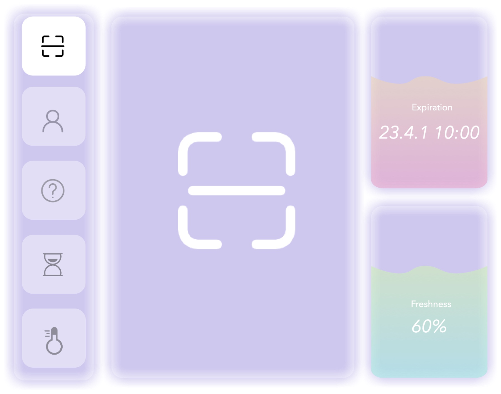
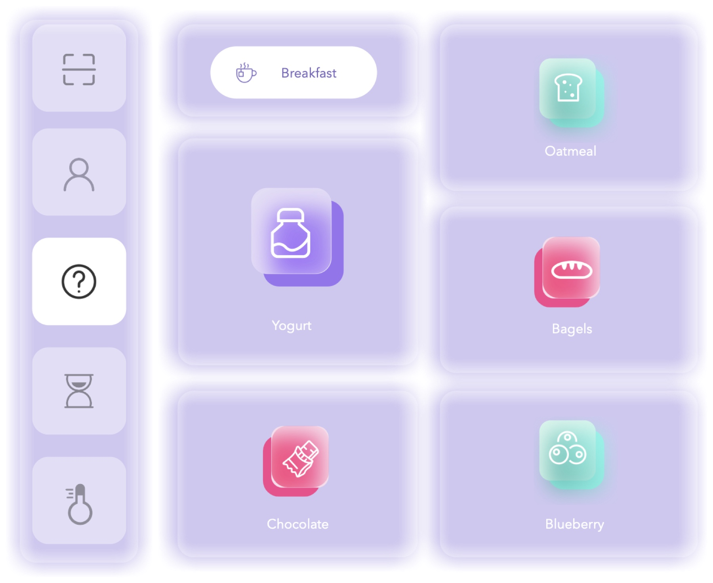
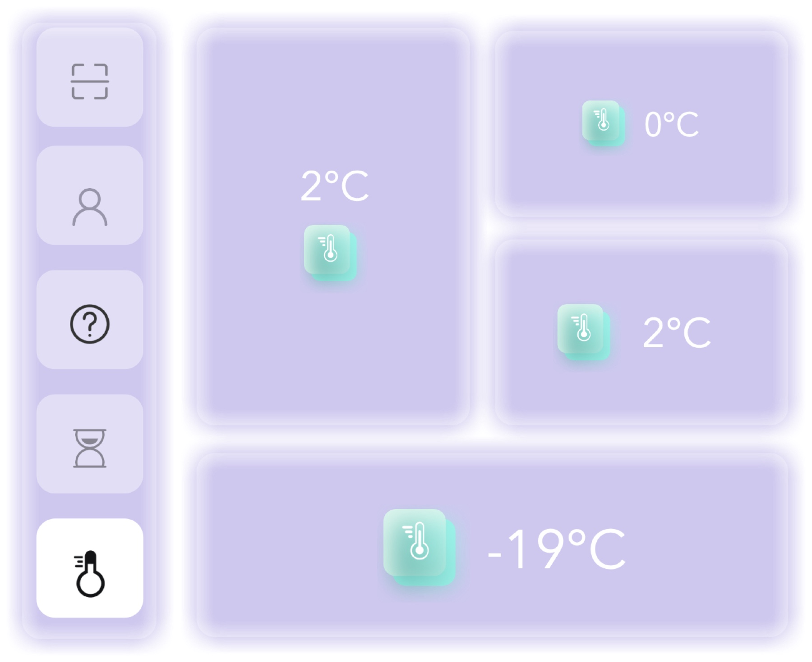
Mapping the maintenance journey before designing the system.
The existing cleaning process and expert interview were mapped together to locate the longest delays, hidden hygiene work and moments where clearer system feedback could help.
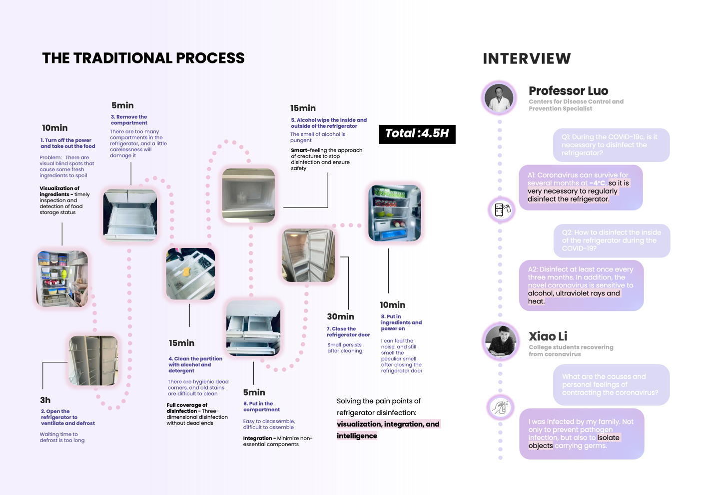
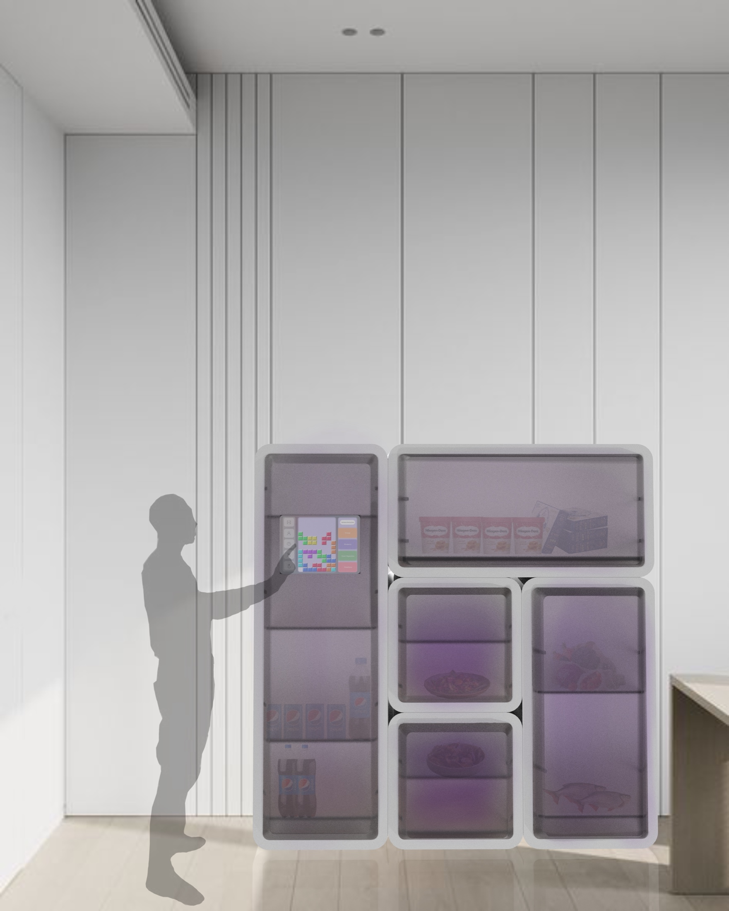
Reflection
The strongest part of the concept is the shared logic—not the untested disinfection technology.
As a pandemic-era student project, the work contains speculative sensing and sanitation ideas. A next iteration would remove unsupported safety assumptions and test the modular storage and information architecture with real shared households.